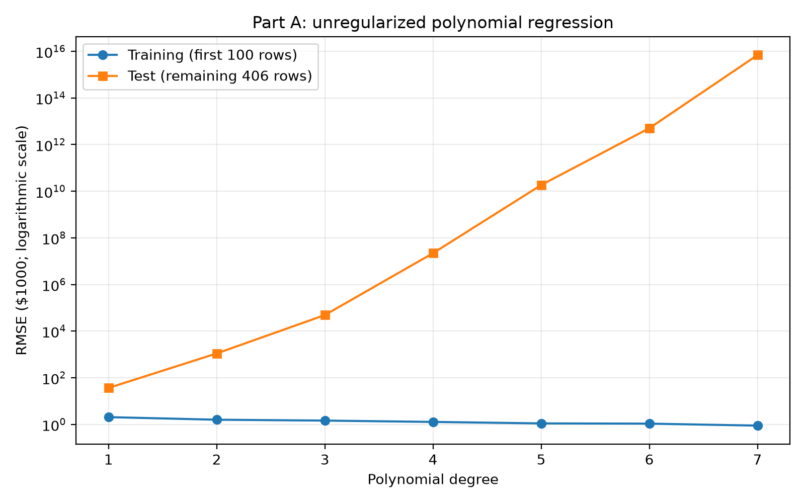
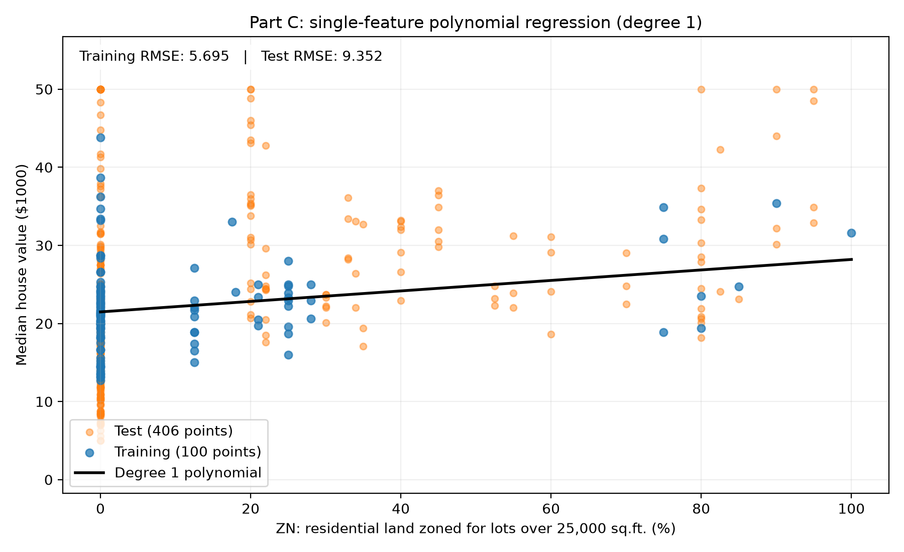
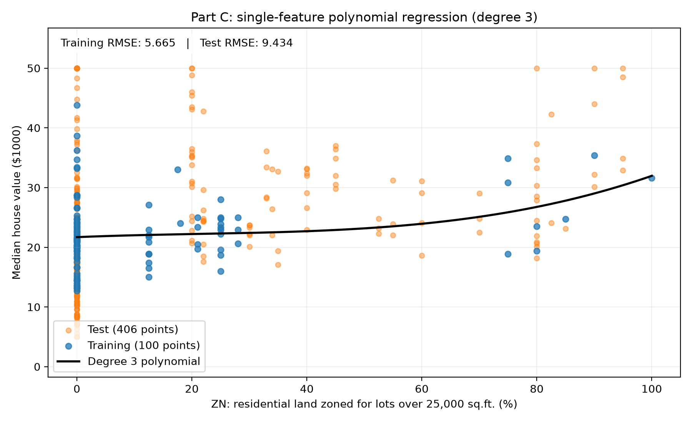
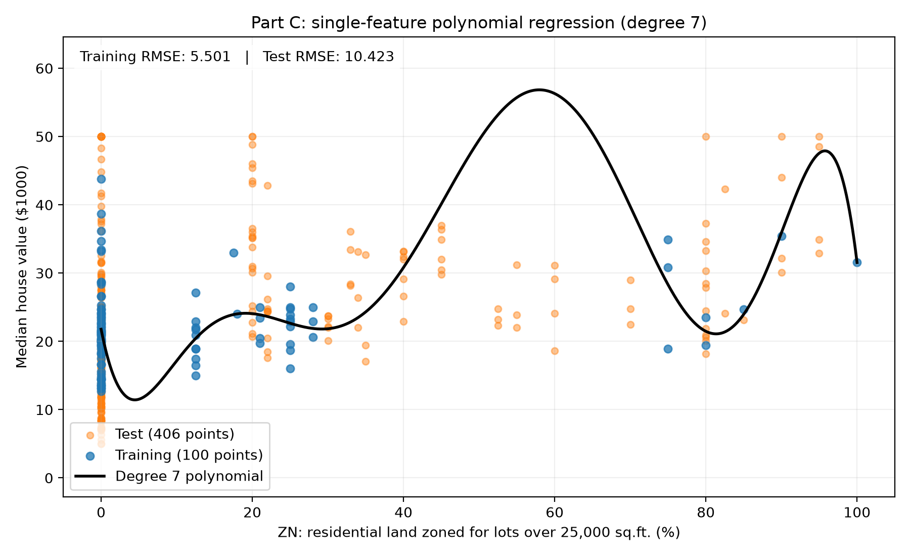
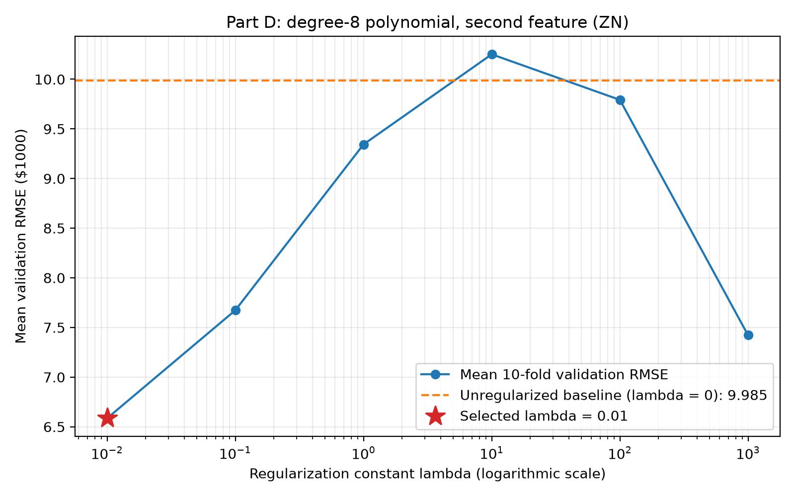
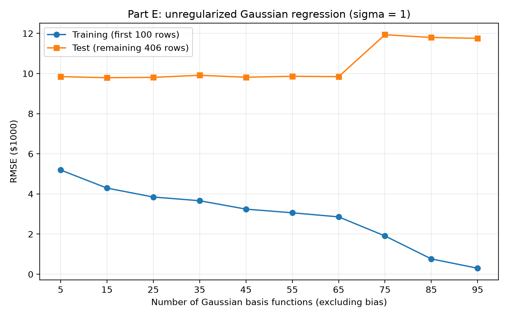
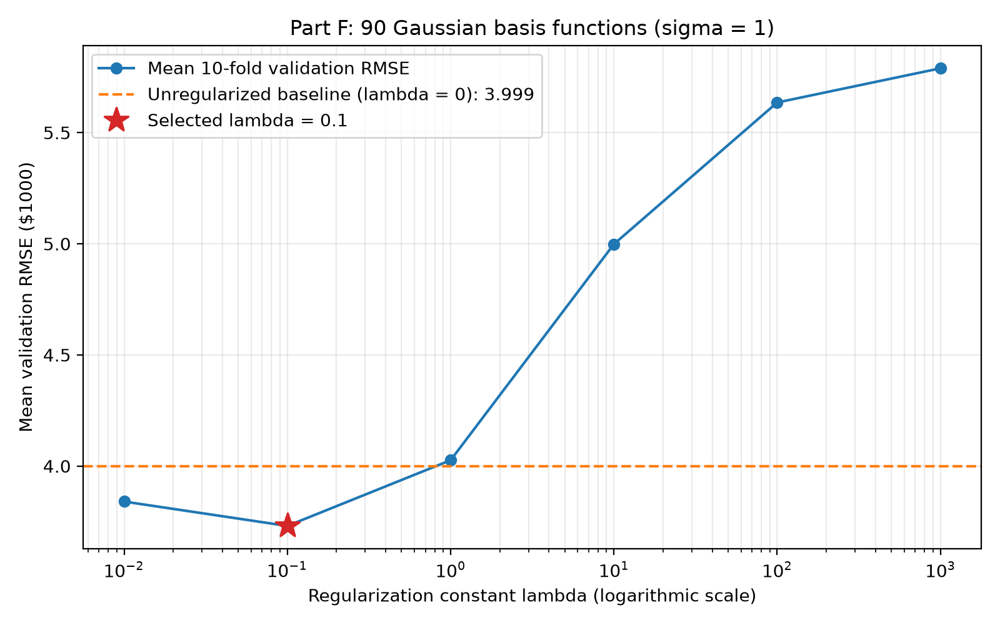

Homework 2
Linear regression with polynomial and Gaussian basis functions.
Models use the first 100 housing observations for training. Parts A, C, and E evaluate on the remaining 406 observations; cross-validation in D and F stays within the training set. Feature normalization uses training statistics only.
Shared methods
Training uses the first 100 rows; testing uses the remaining 406. Features are standardized using training statistics, and house values remain in $1000. Every model includes a bias. Parts D and F use 10-fold cross-validation within the first 100 rows, with shuffled folds (seed 572) and normalization fitted within each fold. Ridge regression penalizes non-bias weights using summed squared error plus λ times their squared magnitudes. Gaussian models use σ = 1 in standardized feature space and centres selected from a seeded training-row permutation. In F, each fold’s 90 training rows supply all 90 centres.
Part A: Polynomial regression
Training RMSE decreases as degree increases, while test error grows sharply. Higher-degree polynomials generalize poorly on this ordered split. The logarithmic error axis keeps both curves visible.

Full results table
Part B: Degree-1 weight analysis
Loading discussion… Read notes
Full results table
Part C: Single-feature polynomial fits
Loading discussion… Read notes



Full results table
Part D: Regularized polynomial regression
Loading discussion… Read notes

Full results table
Part E: Gaussian basis regression
Loading discussion… Read notes

Full results table
Part F: Regularized Gaussian regression
Loading discussion… Read notes
